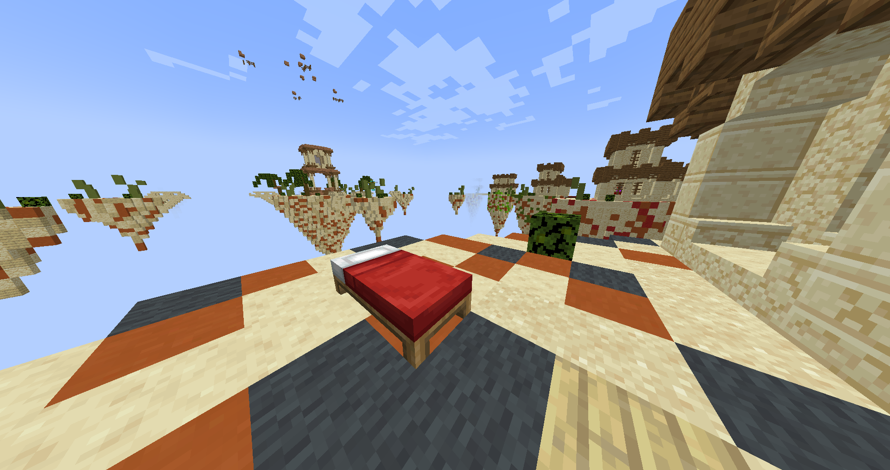

x, y, and z - coordinate variables for the width, height, and length, respectively. x goes from west to east, y goes from bottom to top, and z goes from south to north.
safe zone - the space where you can roam around without taking damage over time.
b/m - unit for the speed of the safe zone shrinking, in blocks per minute. If the rate of shrinking is n b/m, the safe zone will shrink from a*a*a blocks to (a-b)*(a-b)*(a-b) blocks.
diamond island - an island in Bedwars that generates diamond at a constant rate, though a bit slower than iron-and-gold generators.
central island - the island in Bedwars that has 4 emerald generators.
currency - a metal or gem in Bedwars that you can use to purchase and upgrade tools, materials, or generators. The currencies in Bedwars are iron, gold, diamond, and emerald.
Central Chests - the chests in Survival Games where players can get their starting tools.These chests are the center of the circle where players spawn.
Square of Death - A battle area in Survival Games where the remaining players go after 15 minutes of no winner emerging.
The Game in a Nutshell
Gathunt is a game that was made in collaboration with Mojang. It retains the fundamentals of Minecraft, with some added content to make things interesting.
There are three game modes you can play. These three are Gather and Hunt, Bedwars, and Survival Games.
The Different Game Modes
Gather and Hunt
Gather and Hunt, the main game mode of Gathunt, is a battle royale where you gather your own materials to create tools and weapons to hunt your enemies.
You spawn with up to 29 other players on a cubic map with a side length of 2000 blocks. Although, the y value of your spawn may vary, from the mountainous y=1400, to the sea level of y=1000, to the deepest caves of y=50. Your spawn is random, with the condition that no enemy must spawn less than 150 blocks away from you (direction doesn't matter).
1 minute after starting, the safe zone will start to shrink, speeding up every time a player dies. The initial speed of shrinking is 2 b/m. The shrinking speeds up by 0.5 b/m for every dead player. The shrinking stops once the safe zone is n blocks in length, width, and height (where n is the number of players remaining). However, it will continue once another player dies.
The last player standing wins the game!
Above: 2 pictures showing how to play Gather and Hunt.
Bedwars
Bedwars is a game mode where you kill your enemies and destroy their beds, while defending yourself and your own bed.
On each game, you spawn with up to 7 enemies on a map of floating islands. Each player will spawn on an island, with a bed and a generator that generates iron and gold at a constant rate.
Using the iron and gold, you may purchase some tools and materials to get to different places, such as the diamond islands, the central island, or enemies' islands.
Diamonds and emeralds are rarer currencies that you can use to become more powerful in the game. Diamonds are for upgrading your tools, materials, or your iron-and-gold generator, while emeralds are for purchasing the most powerful tools and materials.
When players die (either by taking too much damage or falling off the map), they may be respawned if their bed is intact at the time of dying. Otherwise, they're eliminated from the game.
The last player standing wins the game!

Above: The landscape of a Bedwars map. This map was taken from a multiplayer server in Minecraft.
Survival Games
Survival Games is a game mode inspired by Suzanne Collins's "Hunger Games" trilogy.
In this game, you spawn with up to 15 enemies. All of you spawn on a circle, surrounding the Central Chests.
A countdown of 10 seconds will ensue once all players have spawned in the map. When the timer goes to 0, the game officially begins.
Despite the emphasis on the Central Chests in the early-game, players are not required to go to the center before spreading out.
After 15 minutes, in case more than one player is still alive, all remaining players are spawned on the Square of Death. The playable area in the Square of Death starts as a 10x10 area, with the outermost blocks deleted every 5 seconds.
The last player standing wins the game!
Above: The top view of the Central Chests in Survival Games.
Above: The players' view of the Central Chests in Survival Games.
Fun Fact about this Game
Mojang, the creators of Minecraft, collaborated with Variance Games on this project. This collaboration alone makes this game the most ambitious one Variance Games has ever developed!
.png "a player gathering wood")
.png "a player hunting down another player")